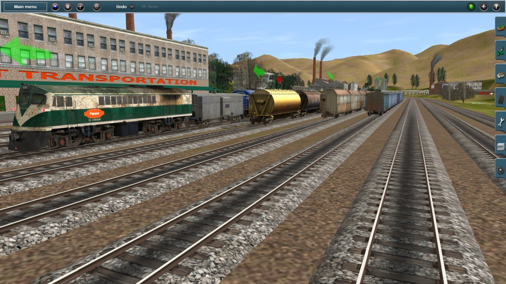
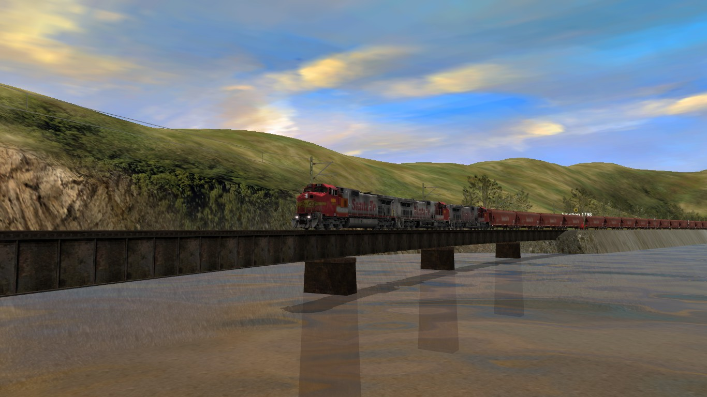
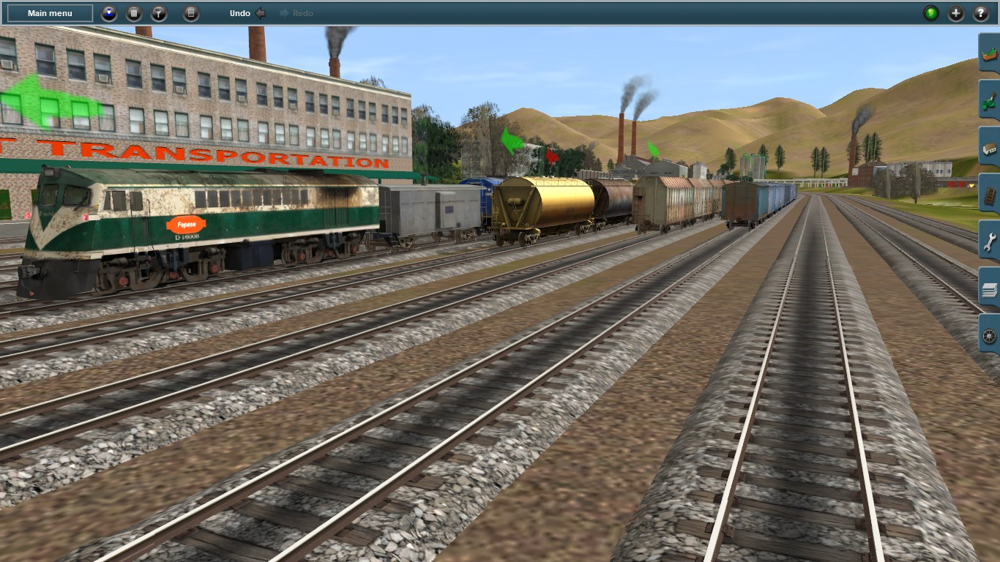
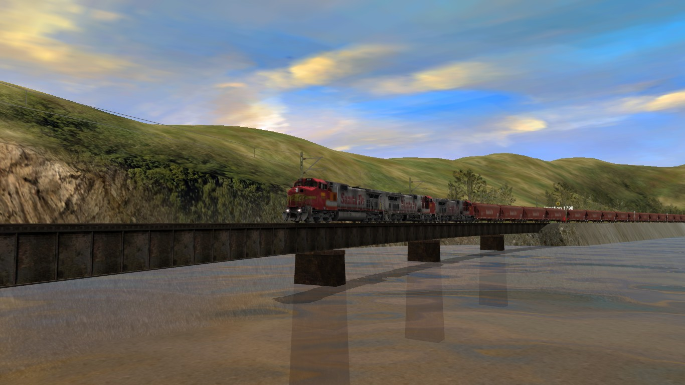

"Donde los trenes cobran vida en cada sesión"

Una ruta detallada basada en la Subdivisión Hi-Line de BNSF (Burlington Northern Santa Fe) que cruza la Marias Pass en las Montañas Rocosas de Montana, Estados Unidos.
Sesión nocturna mostrando la operación completa de un carguero de la empresa española RENFE.
Recreación ficticia de la salida de una vaporera chilena en dirección al norte.
Algunas capturas especiales de mis sesiones en Trainz Simulator.
 


